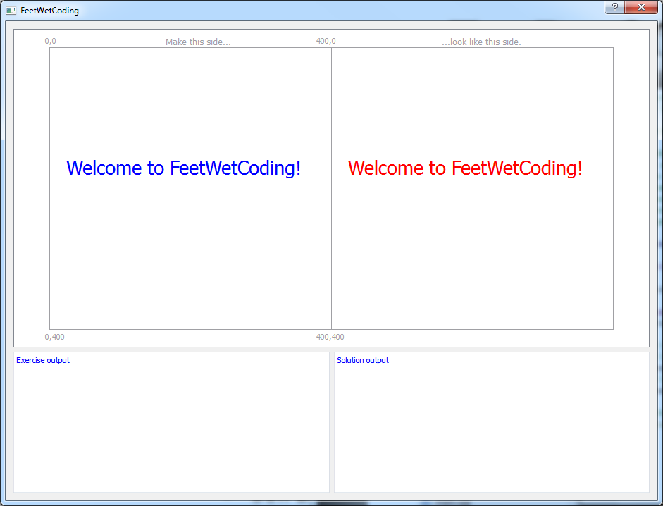

Download and Install FeetWetCoding and the Qt Creator SDK
NOTE: We are looking into updating this page for Linux and Mac. The installation process is basically the same as the Windows process which is documented here, and you may be able to figure out how to install FeetWetCoding and the Qt SDK on Linux and Mac with these instructions. We would greatly appreciate any reports to our forum explaining errors or problems or information that is missing here in terms of installing the Qt SDK and FWC on Mac and Linux so we can improve this documentation! It is a high priority for us to update this page for Mac and Linux, as well as to create some installation videos for youtube.
Official Qt Installation Intro
First, Download and unzip FeetWetCoding from our Github page (click the ZIP button on that page to download.)
The Qt Creator SDK (Software Developer Kit) is a program you will use to create your own programs in C++ with FeetWetCoding. You can read more about what Qt Creator is, and the Qt Toolkit it is based on in the Qt and Qt Creator page, but it is not necessary for you to read that now.
In order to use the FeetWetCoding C++ learning framework, you will need to download and install Qt Creator. (Note that "QtSDK" and "Qt Creator" mean the same thing for our purposes here.)
If you are already comfortable downloading applications with your web browser, just get the online installer from http://qt.nokia.com/downloads, and you can skip the next section, and move on to the instructions for running the QtSDK online installer.
On Linux, we have noticed that the Qt SDK installer does not seem to properly add a startup link in the UI menus for Qt Creator. By default Qt Creator should install in your user home directory, so if you don't see Qt Creator in your startup menu after installing the Qt SDK, look for it in your home directory. We also saw an error message yesterday (2012Mar17) when we tested installation on Ubuntu/Unity complaining that we didn't have a compiler installed (although gcc exists, so it's probably just a path problem--the Qt SDK installer is supposed to include mingw as far as we know.) So we are going to get this ironed out so that we have some Linux installation instructions here that should hopefully address these issues. We would appreciate any help in terms of getting reports on specific problems you might experience trying to install on Linux! Please report problems on our forum.
These instructions show screenshots for installing Qt Creator on Windows using Internet Explorer (IE) or Firefox. The Linux and Mac installation process is the same, and the Qt SDK screenshots are universal across Windows, Linux and Mac OS X.
Instructions to download the QtSDK:
Open http://qt.nokia.com/downloads in your web browser. The "online installer" will download a smaller program that will download the rest of QtCreator. The "offline installer" will download the whole installer program at once, which is well over 1Gb in size. These instructions will show how to install QtCreator using the online installer.

...if your web browser is Internet Explorer, you will need to click the "Run" button when it comes up to run the online installer:

...if your web browser is Firefox click "Save File" when prompted:

...once the file has downloaded, it will run automatically from IE if you clicked the "Run" button.
In Firefox, once you clicked the "Save File" button, and the online installer finishes downloading, you will need to open the Firefox Downloads window:

...with the Firefox Downloads window open, double click the top entry, which should be the Qt SDK online installer:

Don't worry if the filename is not exactly the same. By the time you read this, the number "1_1_4" will probably have changed.
If you get a security warning, click "Run":

Running the QtSDK online Installer
If you are familiar with installing applications, just run the installer and accept all the defaults (if you choose to change things during the installation, remember what you changed, and where you put things) and when the install finishes, run Qt Creator and skip to Build and Run FeetWetCoding to make sure Qt Creator installed OK. If you need help installing Qt Creator, continue with these detailed instructions.
When the QtSDK online installer begins to run (as explained in the previous section), you should see a popup like this:

...this should last a few moments, and then you should see the welcome message. Click "Next" to continue with the installation:

...the installer will ask you where you want the QtSDK to be located. Unless you have a good reason for installing it somewhere else, just accept the default install location and click "Next":

...if you agree to the license, click the radio button saying you agree, and click "Next" to continue with the installation:

...the installer will allow you to choose where the Start Menu shortcuts for Qt SDK live. Unless you have a good reason for changing it, just leave the default value and click "Next":

...the Qt SDK is ready to install. Click the "Install" button:

...while the components are downloading, you should see a progress bar like this:

...with a broadband internet connection, it should normally take around fifteen minutes for the download to complete. When the download is finished, your status window should look like this:

...click "Next", and then click "Finish" to complete the installation:

Building and Running FeetWetCoding
If Qt Creator doesn't launch automatically when the installer finishes, just launch it manually from the Start Menu:

... Qt Creator should start up. Click on "File" and "Open File or Project...":

...navigate to wherever you unzipped/installed this FeetWetCoding software package, and double-click on the "FeetWetCoding" folder to open it:

...that should open the FeetWetCoding project within QtCreator. You will be prompted to setup the project. Leave the default settings as they are and click "Finish":

Click the green "Run" button to build and run FeetWetCoding:

...if everything installed correctly, FeetWetCoding will build, which will take some time. You can click on the button on the bottom of the Qt Creator window entitled "4 Compile Output" if you would like to see the build messages scroll by while you are waiting for the build to finish.
Eventually, the program should run and you should see a window popup which shows what the first exercise looks like when it runs:

Congratulations! You have successfully installed the QtSDK and are ready to learn how to use FeetWetCoding!
documentation generated by HelpNDoc 3/24/2012 4:03 PM
FeetWetCoding version 0.2.2 released 2012Mar24 copyright (c) 2011,2012 Robert Holder, Janice Dugger.
...click the ZIP button on our Github page for the latest source!
Created with the Personal Edition of HelpNDoc: Free CHM Help documentation generator